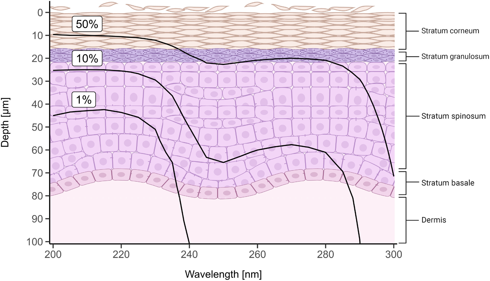

Why Clean Air Matters
We share the air with everyone around us. When someone sick exhales, talks, coughs, or sneezes, they release tiny infectious particles that can float in the air for hours. The COVID-19 pandemic showed us that airborne transmission is a major route for disease spread, but it's not just COVID: colds, flu, and many other diseases also spread through the air.
Ventilation and air purifiers are two great tools, but they're not the best fit for every situation. Ventilation systems usually don't remove dirty air fast enough, and are expensive to expand. Air purifiers work well when used as designed, but people often run them on low or leave them off because of how much noise the fans produce.
We need a solution that continuously cleans the air we're breathing, without expensive retrofits or noisy fans.
Why Far-UVC
Far-UVC technology offers a promising solution to these challenges. It is a kind of light that continuously inactivates viruses and bacteria in the air and on surfaces. It's quick to install, and nearly silent.
The practical impact can be substantial: fewer students absent from schools, reduced hospital-acquired infections, and more consistent workplace productivity during cold and flu season. But how can a kind of light accomplish all this?
How It Works
Ultraviolet (UV) light spans a range of wavelengths, and the effect on viruses, bacteria, and the human body depends very strongly on where we're talking about within that range. While some kinds of UV are dangerous for humans, the specific range we're discussing here is the much safer "far-UVC".
Far-UVC's strongest effect on viruses and bacteria is to damage their proteins, so they can't infect us. This same protein absorption is what makes far-UVC safe for our skin: unlike the UVA and UVB in sunlight that penetrate deep enough to cause lasting damage, far-UVC is so strongly absorbed by proteins in the dead outer layers of our skin that it doesn't reach the living cells beneath.
 Figure 4 from Görlitz et al. (2023), illustrating how little far-UVC (~222nm) penetrates outer layers of dead skin.
Our eyes, however, don't have the same protection from a series of dead outer layers. Instead, they're protected by a combination of natural physical barriers and biological resilience. Our eyebrows, eyelids, lashes, and tear film all help reduce the fraction of far-UVC that makes it into our eyes. The light that does make it in is absorbed by the outermost layers of the cornea, which regenerate rapidly. It is true, however, that eyes are at higher risk from far-UVC than skin, and guidelines for exposure limits and lamp placement are primarily driven by what levels are safe for eyes.
Görlitz et al. (2023) reviewed the risks and benefits of far-UVC and concluded that "current evidence supports using far-UVC systems within existing guidelines." Multiple studies have not found evidence of skin or eye damage, even at much higher levels than are needed for air cleaning.
Getting Started
Far-UVC is most valuable in crowded indoor spaces where people spend extended time together. Because it is based on light, it also has the strongest advantages over alternative methods like air purifiers in larger rooms, where beams of light can travel further.
When looking for a far-UVC lamp, you need to be cautious: there are a lot of poor quality products, and even some that put out dangerous longer wavelengths. Low-quality bulbs that have stopped producing far-UVC will still glow purple, giving the impression that they're still working. Look for lamps that have been evaluated by OSLUV and found to perform as designed, and for bulbs rated for thousands of hours.
Two specific examples to consider are the Aerolamp (evaluation) and the Nukit Torch (evaluation). The Aerolamp is more expensive, but is built around the Ushio Care222 B1. This is a long-lasting design, rated for 10,000 hours. That's one year of 24/7 usage, five years of working hours, or much longer if run less often.
While far-UVC is very safe, make sure to install your lamp following the manufacturer's instructions. Well-filtered 222nm lamps produce minimal amounts of ozone, so manufacturers often recommend using an air purifier with an activated carbon filter as an added precaution. If you're setting up multiple lamps to cover the same area we recommend OSLUV's modeling tool Illuminate to ensure your lamp placement stays within official safety guidelines.
Resources
If you'd like to dig deeper, here are a selection of articles that approach far-UVC from a range of angles. Some focus on the science, others on practical implementation, and several discuss the potential for pandemic prevention.
- Far-UVC fix: The wavelength that harms viruses, not humans, SPIE (September 2025)
- Blueprint for Far-UVC, Blueprint Biosecurity (June 2025)
- Flipping the switch on far-UVC, Works in Progress (March 2025)
- Scientists hope far-UVC light could help stop the next airborne pandemic before it starts, CBS News (April 2025)
- Far-UVC Light Can Virtually Eliminate Airborne Virus in an Occupied Room, CUIMC (April 2024)
- Ultraviolet light can kill almost all the viruses in a room. Why isn’t it everywhere?, Vox (January 2024)
- Disinfecting the air with far-ultraviolet light, Nature Outlook (October 2022)
- Two-Twenty-Two, Derek Lowe (October 2022)
Research
Many peer-reviewed studies have evaluated far-UVC, as part of the process of determining what levels are safe for extended human exposure:
- Arden et al. (2025), "Chronic Far-UVC (222nm) Light Exposure of SKH-1 Hairless Mice Does Not Cause Detectable Eye Pathology or Visual Deficits"
- Buonanno et al. (2025), "222 nm far-UVC light and skin health: Assessment of DNA damage across different skin types"
- Sugihara et al. (2024), "Ocular safety of 222-nm far-ultraviolet-c full-room germicidal irradiation: A 36-month clinical observation"
- Kousha et al. (2024), "222 nm Far-UVC from filtered Krypton-Chloride excimer lamps does not cause eye irritation when deployed in a simulated office environment"
- Görlitz et al. (2023), "Assessing the safety of new germicidal far-UVC technologies".
- Yagyu et al. (2022), "Development of 222 nm-UVC Lamps with Long-Term Stability for Disinfection in Occupied Spaces"
- Eadie et al. (2021), "Extreme Exposure to Filtered Far-UVC: A Case Study"
- Yamano et al. (2020), "Long-term Effects of 222-nm ultraviolet radiation C Sterilizing Lamps on Mice Susceptible to Ultraviolet Radiation"
- Kaidzu et al. (2019), Evaluation of acute corneal damage induced by 222-nm and 254-nm ultraviolet light in Sprague-Dawley rats
- Welch et al. (2018), "Far-UVC light: A new tool to control the spread of airborne-mediated microbial diseases"
- Buonanno et al. (2017), "Germicidal Efficacy and Mammalian Skin Safety of 222-nm UV Light"
About
This resource was developed by Jeff Kaufman (contact), in his personal capacity.